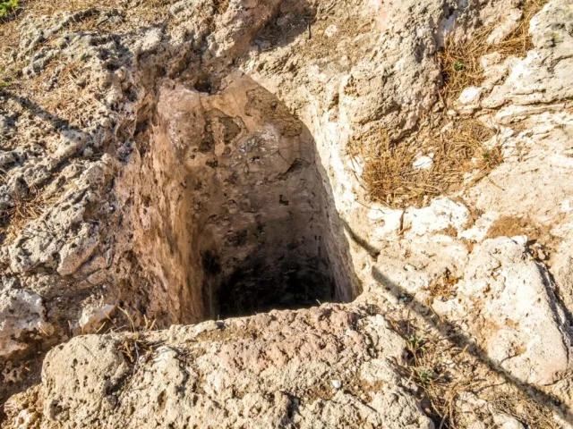
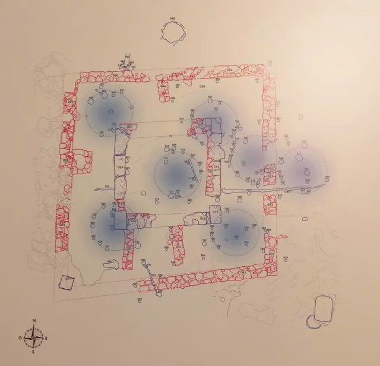
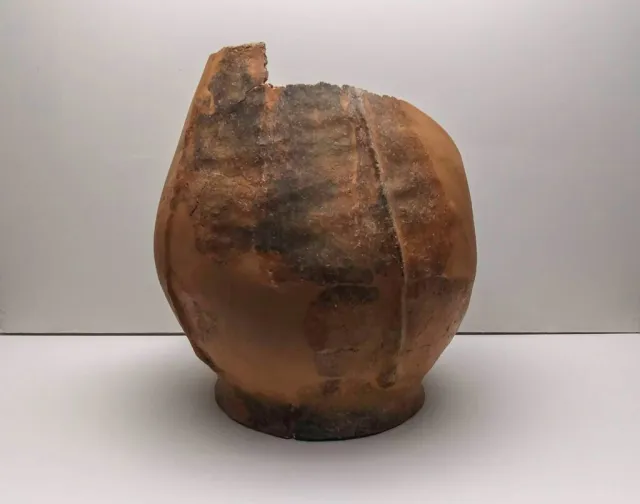
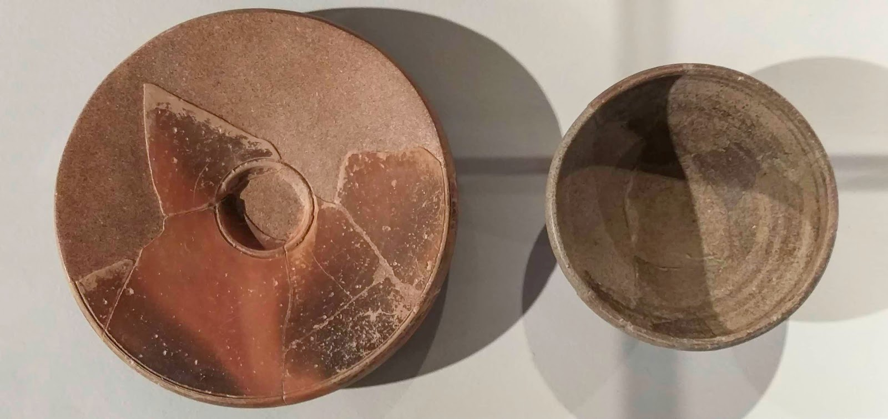
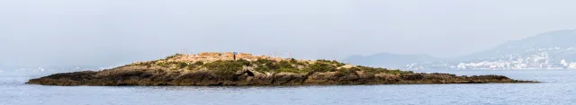

En el Centro Cultural de Can Balaguer, en Palma, se puede visitar entre el 19 de diceimbre de 2018 y el 15 de junio de 2019 «Sa Galera. Más de 4000 años de historia» donde se muestran y se dan a conocer los hallazgos de seis años de excavaciones en el yacimiento arquelológico del islote de Sa Galera, situado en la Bahía de Palma a 175 metros del Caló de Son Calos.
Sobre la superficie de este pequeño islote se resumen, a través de los restos hallados y ahora expuestos, cuatro milenios de historia de Mallorca pero con especial trascendencia durante la ocupación púnica.
De la primera fase de ocupación, lo que sería el calcolítico se hallaron pequeños cuencos con decoraciones incisas así como fragmentos de ollas y toneles, todo ello relacionado con una pequeña construcción de piedra. Durante el siglo II a.C. correspondiente a las épocas pretalayótica y navetiforme fue excavada en el islote una cueva funerario, con corredor de entrada, planta redonda y un nicho en la pared. Durante esta época el islote debió de ser un punto estratégico de comercio, así parece atestiguarlo los fragmentos de grandes toneles encontrados en la excavación
De la época talayótica, además de diversa cerámica, también se encontró un molino manual y posibles moldes de fundición de bronce que nos muestran una actividad continua. Los restos de copas o de ollas, quizás relacionados con el mundo funerario, nos indican la continuidad en la consideración como espacio sagrado del islote. La época púnica es quizás la época de mayor esplendor del lugar. La llegada de los púnicos a Sa Galera se produce en torno al año 300 a.C. En ese momento se crea sobre el espacio sagrado de la isla un complejo con cisternas rituales y canalizaciones excavadas en la roca. En un momento posterior a la I Guerra Púnica construyen su templo, con grandes sillares extraidos de la misma isla, que llegan a medir 120 cm de longitud por 60 cm de altura por 70 cm de ancho. El monumental edificio, con más de 4 metros de altura, era lo primero que veían los navegantes al llegar a la bahía de Palma. Durante la 2ª guerra Púnica el templo sufrió dos destrucciones. La primera mediante un incendio generalizado y la segunda con el desmonte de las estructuras. En la primera mitad del siglo II a.C. el templo fue reconstruido por los ebusitanos, quienes crearon nuevos compartimentos. Esta edificación estuvo en uso hasta la conquista romana en el 123 a.C. Los materiales cerámicos encontrados corresponden su mayor parte a los primeros dos tercios del siglo II a.C.
Durante la ocupación balearica, en un momento intermedio entre el año 146 a.C. en la III Guerra Púnica en la que Cartago fue destruida por los romanos y el año 123 a.C. en la que Mallorca fue conquistada por el consul Cecilio Metelo se produce la construcción de una muralla y de un torreón alrededor del templo por parte de los balearicos. Probablemente fue una tentativa de proteger el puerto marítimo que constituía la casa situada delante del islote.
Dentro del recinto amurallado, los baleáricos tenían un horno y varios hogares. Destaca, especialmente un hornillo excavado en la tierra, que contenía una olla baleárica, puesta del revés y cortada por la base, que servía como parte del propio hornillo. Es probable que su uso fuera alimentario. Las últimas evidencias de época antigua en el islote se corresponden con un potente estrato de ceniza y maderas encontrado en la cisterna 1, proveniente al vez de la destrucción por incendio de una estructura de la superficie del islote. No han sido identificadas de esta época restos romanos. El islote siguió siendo ocupado durante épocas musulmana y medieval y también tuvo presencia humana durante los XVI, XVII y principios del XVIII. El conocimiento de este importante lugar de encuentro de culturas ha sido posible gracias al trabajo entusiasta de un gran grupo humano que sobre todo a partir del año 2013 fue relanzado por los arqueólogos Ramón Martí y Jorge Argüello y la restauradora Silvia Jovani y la colaboración de un gran grupo de voluntarios, concluyendo los trabajos diciembre de 2017.
